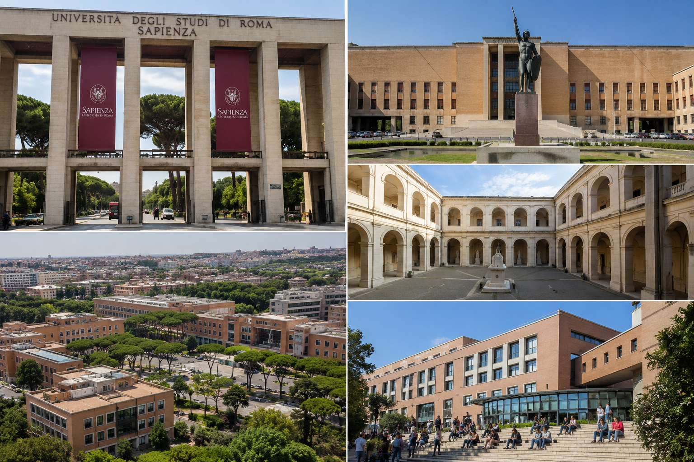

Sapienza University of Rome
რატომ უნდა აირჩიო Sapienza?
Sapienza University of Rome ევროპის ერთ-ერთი ყველაზე ცნობილი და პრესტიჟული უნივერსიტეტია. ის მდებარეობს რომში და სტუდენტებს სთავაზობს მაღალი ხარისხის განათლებას, საერთაშორისო გარემოსა და მრავალფეროვან სასწავლო პროგრამებს.
რით არის უნივერსიტეტი ცნობილი?
უნივერსიტეტი განსაკუთრებით ცნობილია საერთაშორისო ურთიერთობების, სამართლის, პოლიტიკური მეცნიერებების, ინჟინერიის, მედიცინისა და კვლევების მიმართულებით.
უნივერსიტეტის უპირატესობები
- მდებარეობს იტალიის დედაქალაქ რომში
- მაღალი საერთაშორისო რეიტინგი
- ინგლისურენოვანი პროგრამები
- გაცვლითი პროგრამები ევროპის ქვეყნებში
- დიდი საერთაშორისო სტუდენტური საზოგადოება
ვისთვის არის კარგი არჩევანი?
ეს უნივერსიტეტი კარგი არჩევანია სტუდენტებისთვის, რომლებიც დაინტერესებულნი არიან საერთაშორისო ურთიერთობებით, პოლიტიკით, სამართლით, ინჟინერიით, მედიცინითა და სოციალურ მეცნიერებებით.
როგორ უნდა ჩააბარო?
უნივერსიტეტში ჩასაბარებლად, როგორც წესი, საჭიროა:
- სკოლის ატესტატი
- პასპორტი
- აკადემიური ნიშნების ამონაწერი
- ინგლისური ან იტალიური ენის სერტიფიკატი
- ზოგიერთ პროგრამაზე დამატებითი მოთხოვნების შესრულება
სტიპენდიები
საერთაშორისო სტუდენტებს შეუძლიათ მიიღონ სხვადასხვა ტიპის სტიპენდია, რეგიონული დაფინანსება და სახელმწიფო გრანტები.
სწავლების ენები
სწავლება მიმდინარეობს როგორც იტალიურ, ასევე ინგლისურ ენაზე, პროგრამის მიხედვით.
საინტერესო ფაქტი
Sapienza 1303 წელს დაარსდა და მსოფლიოს ერთ-ერთი უძველესი მოქმედი უნივერსიტეტია. დღეს აქ 100 000-ზე მეტი სტუდენტი სწავლობს.